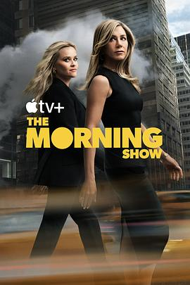

7.9
早间新闻 第四季
The Morning Show Season 4
2025
美国
评分 7.9
导演:
米密·莱德
演员:
詹妮弗·安妮斯顿 / 瑞茜·威瑟斯彭 / 比利·克鲁德普 / 凯伦·皮特曼 / 妮可·贝哈瑞 / 内斯特·卡博内尔 / 马克·杜普拉斯
类型:
剧情
剧情简介
两年过去了，随着传媒巨头 UBA 与 NBN 的合并标志着新时代的开始，新闻编辑室里的气氛也彻底变了。女主播 亚历克斯 莱维（詹妮弗·安妮斯顿 饰）站在风口浪尖，她既是早间节目《TMS》的核心，也直接参与新网络 UBN 的构建；与此同时，布拉德利·杰克逊（瑞茜·威瑟斯彭 饰）从地方记者一跃而上，却又在真相与妥协之间不断摇摆。在新季中，合并后的网络推行 AI 语音与深度伪造技术，用以覆盖2024年奥运会的直播，这一决定掀起编辑室深层的不安。亚历克斯在一次采访中收到一张写着“我们想叛逃”的纸条，随即陷入是否协助被访者逃离的道德困境；布拉德利则被一位匿名线人拉入一家化工厂的环保丑闻报导，网络背后的利益链一层层被撬开。节目制作人查理·布莱克（马克·杜普拉斯 饰）在后台操盘，但每一个镜头之外，都藏着紧张的权力游戏：新的董事会主席、前沿科技、媒体人身份交错。编辑室从“向上看”的主播世界，直掘“背后看”的公司阴影，新闻不再只是播报，变成博弈。氛围紧张且真实：运镜冷静俏皮的剪辑，中断的直播音轨、在后台静默吞吐的呼吸声交织成画面。观众看到的不只是新闻播出，而是“谁在控制新闻”的秘密游戏。这不仅是一个关于电视节目的故事，更是对现代媒体、AI时代、信任危机的锐利反思。